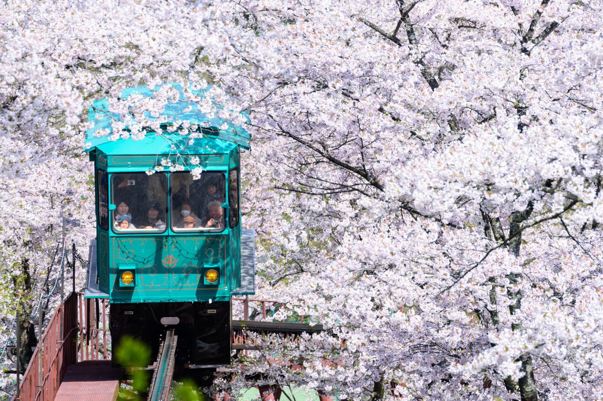

What is Japan?
Japan is an island country in East Asia, located in the Pacific Ocean. It is made up of thousands of islands, with Tokyo as its capital and largest city. Japan is known for its rich history, beautiful natural landscapes, advanced technology, and unique traditions.
The country combines ancient customs with modern life, creating a fascinating mix of old and new. Japan is also famous for Mount Fuji, cherry blossoms, delicious food, anime, manga, and its highly developed cities. With its interesting history and unique way of life, Japan attracts millions of visitors from around the world every year.
